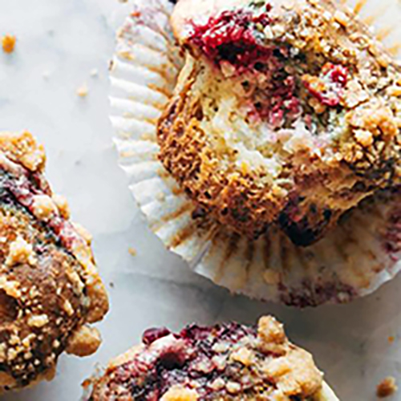

Triple Berry Cheesecake Muffins! Juicy berries, a luscious cheesecake
layer, and some heavy streusel on top to finish it off. Baked to perfection!

INGREDIENTS
Streusel:
1/4 cup butter
1/2 cup brown sugar
1/2 cup flour
pinch of salt
Cheesecake Layer:
6 ounces cream cheese
1 egg yolk
1/4 cup sugar
Triple Berry Muffins:
1/2 cup butter, softened
1/2 cup granulated sugar
1 egg yolk
2 eggs
1/2 cup plain yogurt
1/4 cup brown sugar
1 teaspoon baking powder
1/2 teaspoon salt
1 heaping cup of a frozen berry blend
INSTRUCTIONS
Streusel: Soften or melt the butter, and use your hands to mix it with the brown sugar,
flour, and salt. You should get the consistency that matches the pictures above - like small pebbles.
Cheesecake Layer: Beat the cream cheese until smooth. Add egg and sugar; beat again until smooth.
Muffins: Preheat the oven to 425 degrees. Beat the butter and sugars together until creamed.
Add the eggs, yogurt, and vanilla; stir until combined. Add the flour, baking soda, baking powder,
and salt; mix until just combined. The batter will be thick. Fold in the frozen berries just before
assembling the muffins.
Layering: Line a muffin tin with paper liners. Press 1-2 tablespoons of batter into the bottom of
each muffin tin. Flatten with the back of a wet spoon. Pour a spoonful of cheesecake mixture over
the top. Cover with another 1-2 tablespoons of muffin batter. Sprinkle with streusel.
Bake: Bake for 5 minutes at 425 degrees, then turn the oven temperature down to 350 and bake
for another 15-18 minutes
NUTRITION FACTS
Serves 1
Calories Per Serving: 378